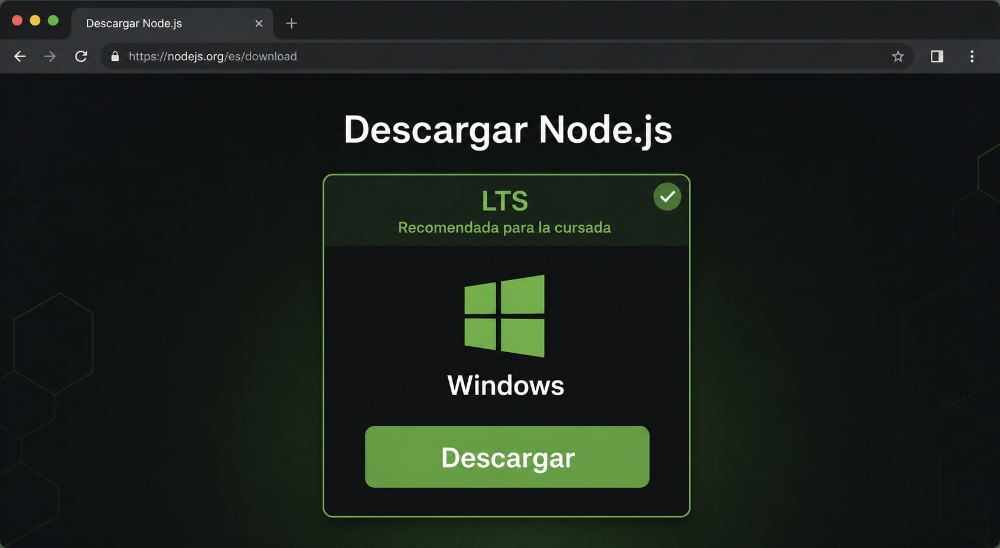
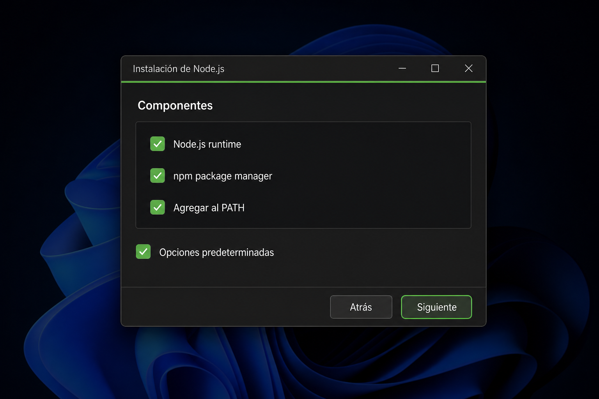
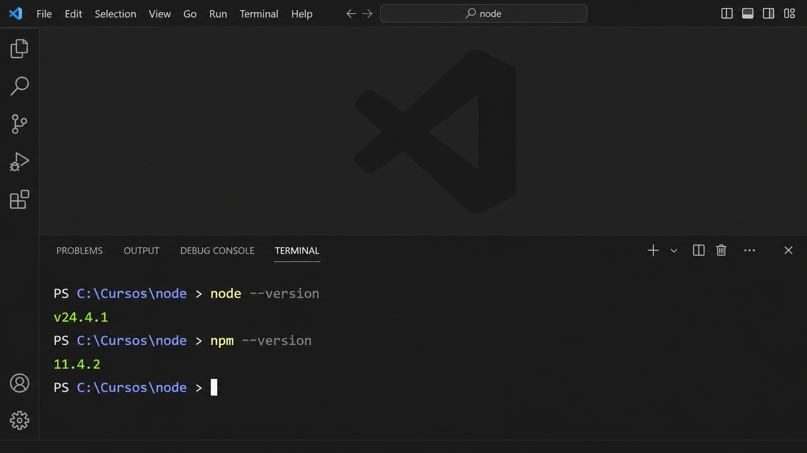

VERSIÓN ESTABLE
Descargá la versión LTS
Abrí la página oficial de descarga de Node.js ↗ y elegí la opción indicada como LTS.
LTS significa soporte de largo plazo: es la alternativa estable recomendada para aprender y trabajar durante la cursada. El número de versión puede ser diferente al de las imágenes y no representa un problema.

Buscá la etiqueta LTS. El sitio oficial puede cambiar de aspecto, pero la opción recomendada conserva esa identificación.
INSTALACIÓN PREDETERMINADA
Ejecutá el instalador
Abrí el archivo descargado y avanzá con Siguiente. Aceptá la licencia y conservá la carpeta y los componentes predeterminados.
El motor que ejecutará tu código JavaScript.
La herramienta para incorporar paquetes al proyecto.
Permite usar node desde cualquier terminal.

No hace falta personalizar la instalación. Si estas opciones aparecen seleccionadas, continuá con los valores predeterminados.
ACTUALIZÁ EL ENTORNO
Reiniciá Visual Studio Code
Cuando el instalador termine, cerrá por completo Visual Studio Code y volvé a abrirlo. Las terminales que estaban abiertas antes de instalar Node.js todavía no conocen la actualización del sistema.
COMPROBACIÓN FINAL
Verificá Node.js y npm
Abrí una terminal nueva y ejecutá estos comandos, uno por vez. Cada uno debe responder con un número de versión. No hace falta que coincida con el ejemplo.
node --version
npm --version
Dos números significan que está listo. La versión exacta puede variar. Cuando reaparece el prompt, la terminal espera el próximo comando.
¿Qué respondió tu terminal?
Podés escribir respuestas como v24.4.1 y 11.4.2.
SI LA TERMINAL NO RECONOCE EL COMANDO
Primero comprobá, después modificá
node no se reconoceVS Code pudo quedar abierto durante la instalación.
Cerralo completamente, volvé a abrirlo y creá una terminal nueva.npm no se reconocenpm o la configuración del PATH podrían no haberse instalado.
Ejecutá nuevamente el instalador y conservá los componentes predeterminados.npm.ps1 bloqueadoPowerShell puede impedir la ejecución del script de npm.
No cambies la seguridad por tu cuenta: guardá el mensaje completo y consultalo con el docente.Confirmá cada paso
Ya podés continuar con la preparación de Git.